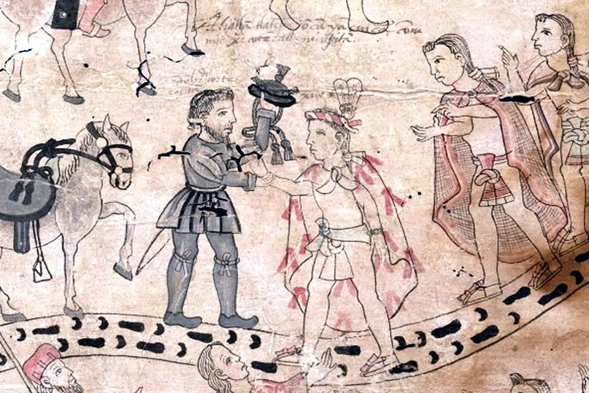
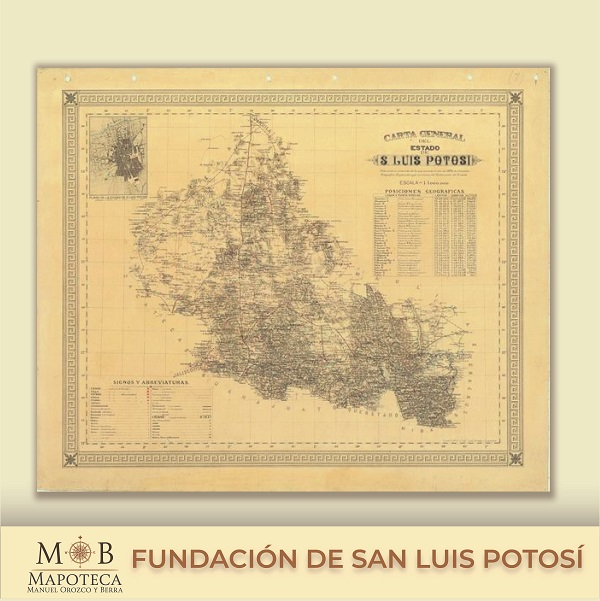
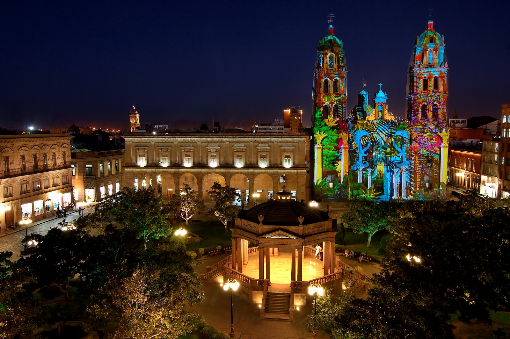

En la época prehispánica tres grupos indígenas importantes predominaron en lo que hoy es el estado de San Luis Potosí: huastecos, pames y guachichiles.

Los huastecos se denominaron a sí mismos los serpientes ó tzanes. El desarrollo cultural de la Huasteca abarca desde el periodo Preclásico (aprox. 2000 a.C.) hasta el Posclásico (1519 d.C).
Los Huastecos hacían excelentes piezas de cerámica, trabajaban el oro, el cobre, el jade, el onix, la obsidiana y la piedra. Hacían papel amate o de higuerón. Practicaban el juego de pelota. Tenían variedad de danzas rituales, así como el famoso “volador”. La música se tocaba con flautas de cinco notas, pitos, especie de trompetas, tambores, atabales. Cosechaban maíz, frijol, chile o ají, tomate, algodón, zapupe.”
En cuanto a los chichimecas, el vocablo chichimeca es genérico; se utiliza para designar a los grupos indígenas que habitaban al norte de Mesoamérica, zona de las grandes culturas. Dentro de este grupo se encuentran los guachichiles y los pames.
Los Guachichiles ocuparon la región occidental del estado de San Luis Potosí. “Quachichil es vocablo mexica, significa gorrión: de quaitl, cabeza, y chichiltic, cosa colorada o bermeja”. Los españoles los llamaron de esta manera pues era costumbre entre ellos teñirse el cabello de colorado, de ahí la apariencia de gorrión. Su religión era muy rudimentaria.
No usaban vestido; las mujeres se fajaban a la cintura un cuero de venado. Se untaban almagre y otros minerales en tonos negros y amarillos. Cuando estaban de luto se trasquilaban y tiznaban de negro. Cazaban liebres, aves y venado. En lugar de vasijas de barro o palo, usaban unas de hilo tejido y apretado. Su pasatiempo era el juego de pelota y eran sumamente belicosos. Hacia 1550-51 comenzaron sus asaltos a los traficantes de Zacatecas y se mantuvieron en pie de guerra hasta el año de 1589 en el que Rodrigo Río de la Loza logró concertar con ellos la paz definitiva.
Por lo que se refiere a los Pames, durante la conquista se les designó con el nombre de pamies a los chichimecas más cercanos a México, pues a menudo usaban la palabra “pami” que en su lengua significa “No”. Abarcaban parte de Michoacán, Querétaro, Hidalgo y San Luis Potosí. Los pames en general eran gente dócil, los distinguía la pereza. Sus casas eran de zacate, aoyate o palma. Los pames se llaman a sí mismos xiui, término con el que se reconocen como miembros de un grupo étnico específico. Santa María Acapulco es uno de los reductos indígenas en el que el patrimonio cultural pame se ha preservado con mayor énfasis.
La penetración española en la zona Huasteca se realizó poco después de iniciado el proceso de conquista y colonización de la Nueva España. Así el señorío de Oxitipa estuvo en manos de Hernán Cortés y Nuño de Guzmán.

La evangelización de esta zona se debe a Fray Andrés de Olmos, misionero franciscano. A principios del año de 1592 se descubrieron las minas del Cerro de San Pedro, que originaron la fundación del pueblo de San Luis Minas del Potosí en noviembre del mismo año.
Hay tres personajes centrales en el establecimiento de esta población. Los dos primeros son: Fray Diego de la Magdalena, franciscano cuya labor evangélica junto con el capitán Miguel Caldera, lograron someter a los guachichiles e iniciarlos en la vida sedentaria, tarea en la que fueron auxiliados por indígenas tlaxcaltecas que se encargaron de mostrarles las bondades del trabajo. El tercero, se trata de Don Juan de Oñate, el primer alcalde mayor, a quien se le debe la traza y primera disposición del pueblo.
El crecimiento de San Luis Minas del Potosí, debido al auge minero, se reflejó en un mayor número de conventos de franciscanos y agustinos para atender las necesidades espirituales de la población.
El siglo XVII fue para San Luis Potosí muy significativo, aunque la producción minera había decaído de forma sensible. Se establecieron jesuitas, juaninos y mercedarios, además de haberse erigido el primer santuario de Guadalupe de la Nueva España.
En 1656 el pueblo de San Luis adquirió la a categoría de ciudad y don Martín de Mendalde, alcalde mayor hacia 1674 se distinguió por su buen gobierno.
La primera constitución del estado se juró el 26 de octubre de 1826. A pesar de las pésimas condiciones económicas imperantes, hacia 1827 se estableció la Casa de Moneda en San Luis Potosí, para acuñar la plata proveniente de las minas de Charcas y Catorce, que hasta entonces se habían acuñado en la Casa de Moneda de la ciudad de Zacatecas.
La ciudad de San Luis Potosí fue uno de los ejes de las comunicaciones terrestres del siglo XIX, tanto hacia el norte, como hacia el golfo, para alcanzar el puerto de Tampico. Asimismo, era un importante centro distribuidor de todas las mercancías que se traían del exterior.
A principios del siglo XX se descubrieron yacimientos petrolíferos cerca de Ebano, con lo que se inició la explotación comercial sistematizada del petróleo en México.

Los precursores intelectuales de la revolución Díaz Soto y Gama, Juan Sarabia, Rivera, Arriaga y otros abrieron fuego contra la dictadura en el Primer Congreso Liberal inaugurado el 5 de febrero de 1901.
Hacia 1905 se levantó Vicente Cedillo en Minas Viejas municipio de Ciudad del Maíz.
Los maderistas potosinos organizaron la lucha armada en sus lugares de influencia. A la caída de Madero y usurpación de Victoriano Huerta, Venustiano Carranza organizó en el norte del país un ejército para luchar contra Huerta. A él se unieron otros revolucionarios como Francisco Villa, Álvaro Obregón y, en San Luis Potosí, Juan Barragán.
Cuando Huerta fue derrotado, los revolucionarios se dividieron en constitucionalistas, villistas, zapatistas y otros grupos, como los encabezados por Alberto Carrera Torres y los hermanos Magdaleno, Saturnino y Cleofas Cedillo en San Luis Potosí.
El general Saturnino Cedillo fue el primer gobernador potosino que ejerció el cargo durante un periodo completo después de la revolución. Tenía una larga y experimentada carrera militar.
A partir de la década de los sesenta se ha impulsado el desarrollo industrial del estado. San Luis Potosí y actualmente es una próspera ciudad.